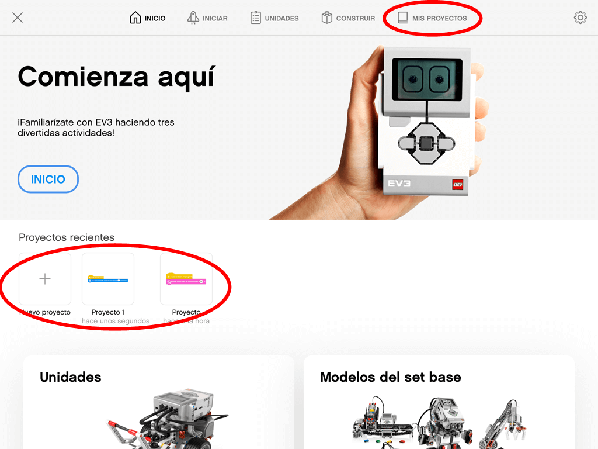

En esta parte aprenderemos a utilizar la aplicación de programación de nuestro bloque EV3.
En la primera pantalla buscaremos las zonas donde aparecen nuestros proyectos, que son o en la parte superior derecha (MIS PROYECTOS) o en la zona media de la pantalla (Proyectos recientes). Aquí, en esta zona media es donde también podemos añadir nuevos proyectos. Cada proyecto es un programa por separado.

Si pinchamos en MIS PROYECTOS, se muestra una lista de los proyectos que hayas realizado.
Para editar un proyecto existente, haremos clic en el icono de edición a la derecha de la pantalla y luego
seleccionaremos el proyecto que queremos editar. Seleccionaremos la acción deseada entre borrar, duplicar y
renombrar.
Si pinchamos en un nuevo proyecto, nos abrirá la pantalla de programación donde tendremos varias partes:
- Icono de vuelta a la pantalla de inicio en la parte superior izquierda representado con una casa.
- Lista de proyectos abiertos en la parte superior de la pantalla que podremos cerrar mediante el aspa
asociado.
- Propiedades del proyecto dentro de cada proyecto abierto representado por tres puntos en vertical,
donde podremos cambiarle el nombre a nuestro proyecto.
- Nuevo proyecto a la derecha de la barra de proyectos abiertos, representado por un símbolo más.
- Mostrar u ocultar todos los ladrillos (bloques) de código en la parte inferior izquierda de la
pantalla. Recomendamos pulsar para que se vean todos para tenerlos disponibles en todo momento.
Otras partes de la pantalla de proyecto son:
- El panel del bloque EV3 se situa en la esquina superior izquierda y está representado por el dibujo
de un bloque EV3 con un indicador de color rojo (no conectado) o verde (conectado). Si pinchamos en
él, nos muestra un resumen de los sensores y motores conectados y su estado, además de otrs datos
relativos al bloque EV3 conectado.
- Toda la zona central es nuestro área de programación.
- En la zona inferior derecha se encuentran los iconos de cargar en nuestro bloque EV3 y el de ejecutar
el programa cargado (lo carga antes de ejecutarlo).
- En la parte de la izquierda, de arriba a abajo tenemos la lista de bloques disponibles para nuestro
programa, agrupados según funcionalidad en:
* Motores: controla un motor individalmente.
* Movimiento: Controla dos motores a la vez con sincronización entre ellos.
* Pantalla: escritura en la pantalla de nuestro bloque EV3.
* Sonido: Reproducción de sonidos a trvás del altavoz de nuestro bloque EV3.
* Eventos: Ejecución de acciones basadas en eventos como por ejemplo, un sensor o un temporizador.
* Control: Aquí es donde tenemos los bucles, las declaraciones if / else, etc.
* Sensores: Mediante estos bloques podremos leer los distintos valores obtenidos por los sensores.
* Operadores: Tenemos todos los operadores matemáticos y lógicos permitidos.
* Variables: en esta zona podremos crear variables o listas para poder almacenar datos.
* Mis Ladrillos: En esta parte podremos definir bloques personalizados.